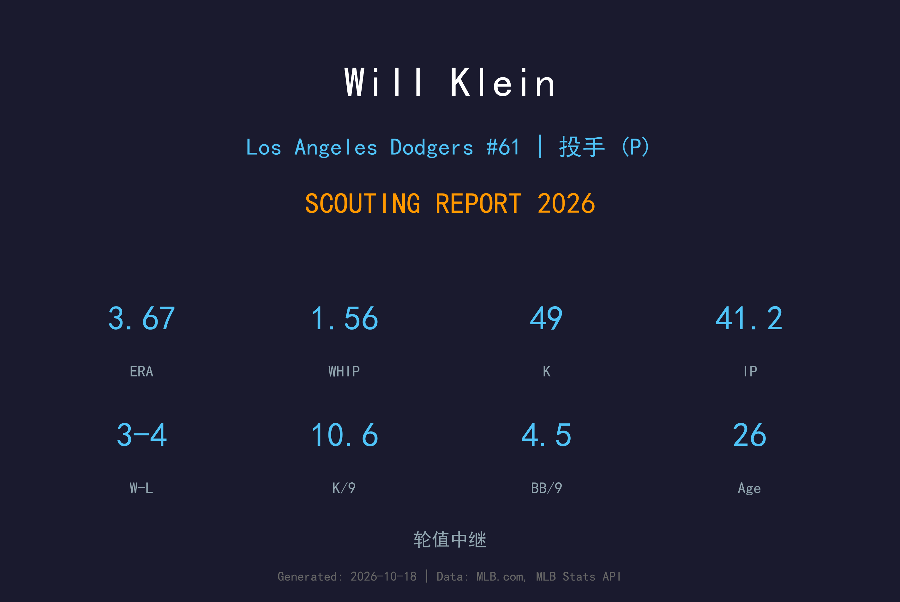
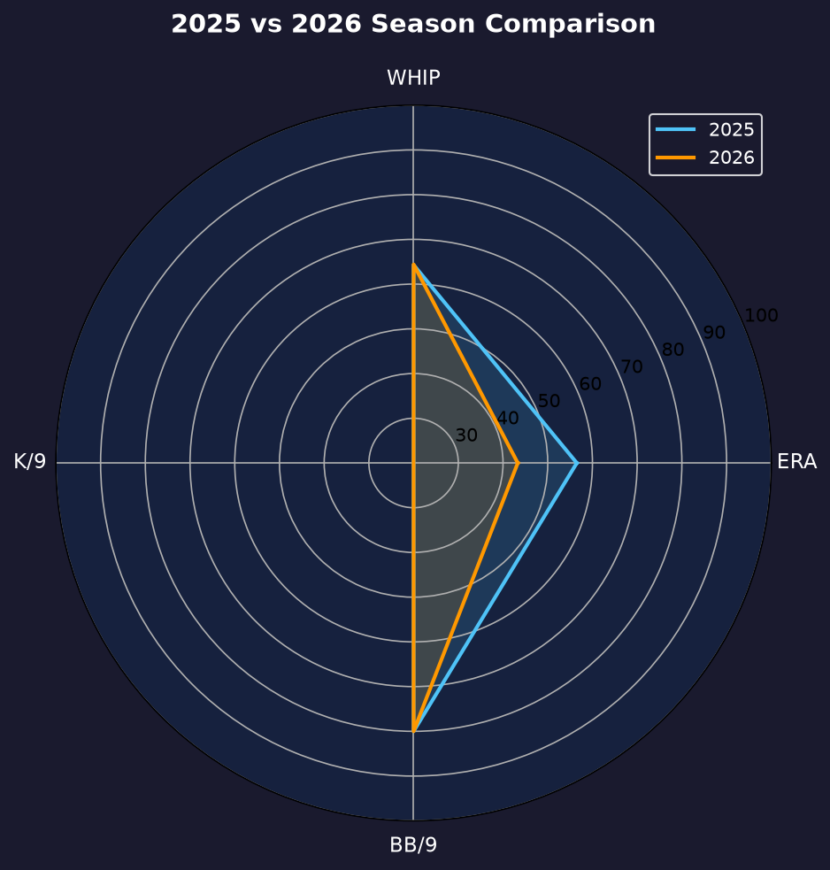
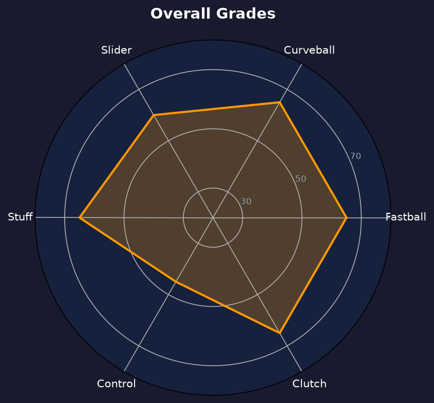

Los Angeles Dodgers #36 | 后援投手 | 右投 / 右打 | 2025 世界大赛英雄

Will Klein 是2025年世界大赛第3战的英雄——后段登板主投4局无失分、5次三振拿下胜投，一战奠定自己在道奇牛棚的地位。2026年他完整出赛了大半个赛季，成为球队最倚重的中继之一。
2026年他出赛36场（3场先发），缴出3胜4败、3.67 ERA、41.2局49次三振、12次 hold、2次救援成功的全能成绩。10.58 K/9 的三振率与 0.65 HR/9 的压制力显示他的 stuff 仍在上升通道，唯 1.56 WHIP 与 4.54 BB/9 的控球是他迈向 elite 中继的最大障碍。
赛季末他进入 60 天伤病名单，2027年的首要任务是健康回归。26岁的 Klein 已经用世界大赛的表现证明了自己的大场面属性，他的目标是在2027年成为道奇第八局的固定答案。
对多伦多蓝鸟后段登板主投4局无失分，用球72颗（生涯新高），三振5人含满球数曲球三振 Tyler Heineman 化解二三垒危机，成为胜投投手。
36场出赛、12 hold 全队前列，从"世界大赛奇兵"转型为可信赖的常规中继。
赛季末段因伤进入60天伤病名单，2027年春训将以健康回归为首要目标。

| 赛季 | G | GS | W-L | ERA | IP | SO | BB | WHIP | HR/9 |
|---|---|---|---|---|---|---|---|---|---|
| 2025（道奇） | 14 | 0 | 1-1 | 2.35 | 15.1 | 21 | 10 | 1.57 | 0.00 |
| 2026 | 36 | 3 | 3-4 | 3.67 | 41.2 | 49 | 21 | 1.56 | 0.65 |
工作量翻了近三倍（15.1→41.2局），ERA 随样本回归上升，但 WHIP 持平、三振率保持——从奇兵到主力的转型成色十足。
球速：96-99 mph
评分：A-
6'5" 巨躯投出的速球俯冲感极强，是他三振链的起点。
球速：81-84 mph
评分：A-
世界大赛三振 Heineman 的那颗满球数曲球就是他的招牌——下坠晚、幅度大。
球速：88-91 mph
评分：B+
对付左打者的主要武器，与速球的高度差制造挥空。
10.58 K/9 与 0.65 HR/9 是 elite 中继的数据轮廓，但 1.56 WHIP 暴露了他的阿喀琉斯之踵：每9局近1.6人上垒，其中一半来自保送。当他的曲球找不到好球带时，他会陷入 deep count 被迫用速球对决——这正是他 ERA（3.67）高于 stuff 水平的原因。
36场出赛中包含3场先发与4场收尾，说明教练团把他当作"哪里需要往哪搬"的万能工具。他的 inherited runners 处理（15 人、8 得分）还有提升空间，但能在长中继与一局中继之间无缝切换，是他的独特价值。
从世界大赛英雄到常规主力，Klein 交出了合格的答卷。12 次 hold 证明他在第七、八局的可靠性，2/3 的救援成功率也让他成为终结者缺勤时的备胎。赛季末的 IL-60 是唯一遗憾。

世界大赛验证过的多功能中继，控球是最后一块拼图
B+ 级 / 高价值牛棚武器
赛季末段进入 60 天伤病名单，未随队参加季后赛（道奇 NLDS 3-1 晋级、NLCS 0-4 止步期间他一直在伤兵名单）。
Will Klein 的2027赛季目标是把 WHIP 压到 1.30 以下，成为道奇第八局的固定人选。如果控球改善，他完全有潜力成为联盟顶级 setup man。
2026：36场 3.67 ERA、12 hold → 赛季末 IL-60
2027：目标 60+ 场、ERA 3.50 以下、WHIP ≤1.30、竞争主要 setup 角色
2028+：若控球成熟，有望成为终结者候选
William Boone Klein 出生于印第安纳州 Bloomington，2017年毕业于 Bloomington North High School，随后进入 Eastern Illinois University，2020年球季开始前被评为 Ohio Valley Conference 头号新秀。
2020年 MLB 选秀第5轮被堪萨斯市皇家选中（总第135顺位）。他的大联盟之路辗转多队：2023年在2A投出 K/9 13.5 后升上3A，2024年4月28日在底特律完成大联盟首秀；同年7月30日被皇家交易至奥克兰运动家（换来 Lucas Erceg），2025年1月又被交易至西雅图水手。最终他在2025年落脚道奇，6月21日完成道奇首秀。
真正让他名留青史的是2025年世界大赛第3战：后段登板主投4局无失分，用球72颗（道奇生涯单场新高），三振5人，包括一颗满球数曲球三振 Tyler Heineman 化解二三垒有人危机，成为该场胜投。这场表现证明他不仅能抗压，还能在长局数中维持球质。场外的 Klein 以坚韧与低调著称，他的漂泊生涯是世界大赛英雄叙事里最动人的底色。